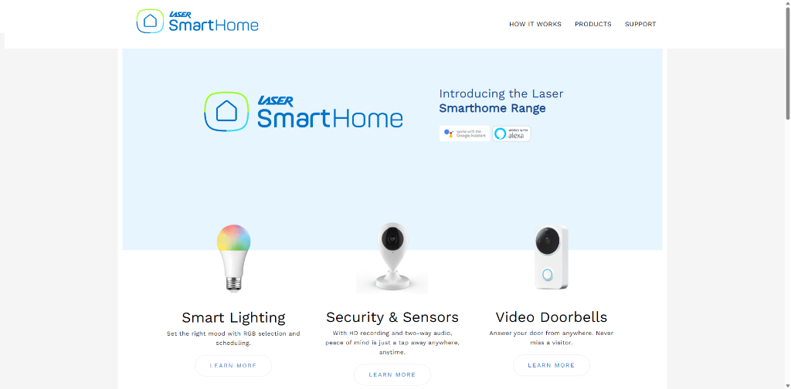
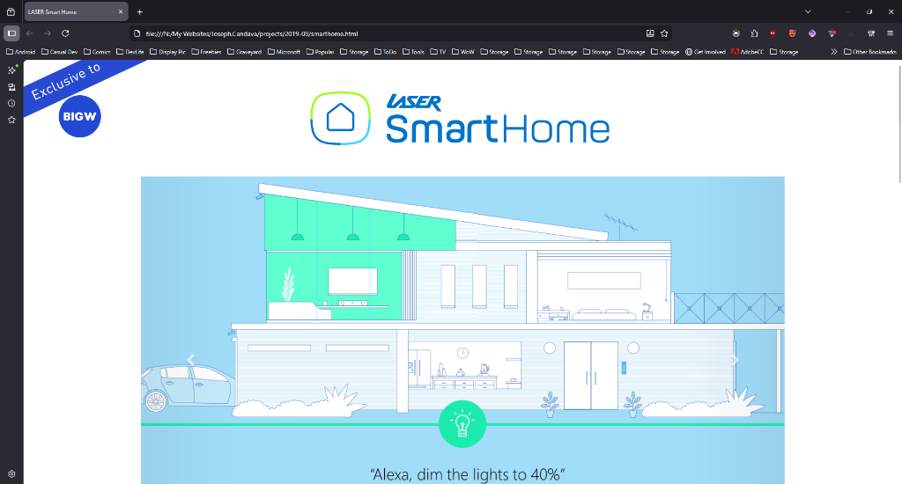

Joseph Candava
IT Administrator & ERP Developer
Specializing in Microsoft Dynamics 365 Business Central, IT Administration, and Business Software optimization. I bridge the gap between complex technical architecture and seamless business operations.
About Me
After working as an IT administrator, I can be able to effectively organise Microsoft 365 Admin Center accounts, be able to perform a domain join, be able to grant/revoke permissions pertaining to company sensitive documents, be able to resolve account issues via Microsoft Intune/Entra and be able to assign licenses to staff members and manage Microsoft Azure objects using Microsoft Powershell commandlets in a timely, responsible manner.
I can also be able to document configurations through the use of note-taking software like Microsoft OneNote, so that they can be easily referred to other IT staff and be able to check upon the facts which can be used to improve troubleshooting efforts towards resolving complex problems. (network configurations, hardware configurations, SAAS configurations, etc.)
After working as a developer on Microsoft Business Central, I can be able to produce extensions tailored to introducing Power Bi compatible new fields, introduce existing and new fields to custom report layouts, be able to troubleshoot staff member usage with Microsoft Business Central in deeper detail and be able to ease the overall user experience through these means mentioned above. (using AL with Microsoft VS Code and amongst other IDE extensions in combination to deploy, test, troubleshoot and produce extensions responsibly.)
After first hand experience working in LASER Corporation Holdings Pty Ltd, I am capable of dealing with day-to-day pressures of staff member requirements as they face challenges interacting with the general public over the phone, in-person, and through meetings remotely through software such as Zoom, Microsoft Teams, Google Meeting, Slack, and be able to troubleshoot IT problems using TeamViewer, AnyDesk, Microsoft QuickSupport, and communicate effectively through carefully explaining and through extensive use of screenshot programs to better make users better aware of the programs and platforms that they use daily.
I can be able to resolve HelpDesk tickets from Atlassian Jira, FreshDesk and Microsoft Planner effectively and escalate difficult issues to the platform's corresponding Support as well as research relevant documentation and forums so that experts are better made aware of the challenges users experience with IT related problems such as recovering IT devices from unplanned on-site power outages.
In my never-ending lifelong commitment to learning technology, I would like to able to produce attractive software that is engaging and exciting, the overall productivity and enjoyment of many workplace environments can improve.
Professional Experience
Click on any role to view detailed achievements.
Half of the job involves improving and maintaining the system at the software level and the other half is assisting staff members at troubleshooting various IT issues as well as configuring Microsoft Dynamics 365.
- Architected and produced Microsoft Business Central extensions using AL and VS Code to introduce new fields and custom report layouts.
- Optimized Power BI compatibility by introducing specialized fields for data reporting and analysis.
- Managed Microsoft 365 Admin Center, including license assignment, domain joins, and Entra/Intune account resolution.
- Utilized Microsoft PowerShell commandlets to manage Azure objects responsibly and efficiently.
- Resolved complex HelpDesk tickets via Atlassian Jira, FreshDesk, and Microsoft Planner, including device recovery from power outages.
- Supported remote collaboration and troubleshooting using Zoom, Teams, TeamViewer, and AnyDesk.
Recreated websites in custom code and gained first-hand experience with Agile methodologies.
- Developed and refined frontend code for various web projects, ensuring high-quality user interfaces.
- Collaborated in an Agile environment using Kanban boards and participating in sprint cycles.
- Gained practical experience in responsive design and modern web standards.
Assisted education faculty with IT issues using a troubleshooting ticketing system.
- Provided technical support for hardware and software issues across the faculty.
- Managed and resolved support tickets in a timely manner to maintain operational efficiency.
- Gained foundational experience in enterprise IT support and user communication.
Web Projects
A selection of websites and microwebsites I have contributed to.

LASER Corporation
Major contribution to the front-end development, ensuring a modern and responsive experience for an electronics leader.
Visit Website →
Connect SmartHome
Developed the front-end architecture for a seamless smart home product showcase and e-commerce platform.
Visit Website →
NRGVault
Designed and implemented the front-end for a rugged, high-performance portable power solution website.
Visit Website →
LASER SmartHome (2019 Microsite)
Built a dedicated microsite for Laser's smart home range, focusing on intuitive navigation and product education.
View Local Site →
Connect SmartHome (2019 Microsite)
Engineered a focused microsite for the Connect brand, highlighting smart lighting and security solutions.
View Local Site →
LASER Smarthome x BIG W
Developed a specialized partner microsite for the Laser SmartHome range exclusive to BIG W customers.
View Local Site →Technical Expertise
Platforms & Tools
Development & Data
Support & Productivity
Let's Connect
I'm always open to discussing new opportunities or tackling complex system challenges.